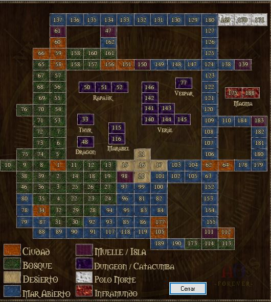

Mapa
Aquí te dejo un mapa del mundo... pero ten cuidado este mapa no es muy preciso, ya que, según los rumores. Ciertos aventureros han encontrado nuevas tierras y nuevos lugares, pero no han sobrevivido para contar dónde se ubican y menos para realizar un mapa.

Ciudades
En AOForever hay varias ciudades e islas, las cuales tienen características propias. Las ciudades son las llamadas zonas seguras, donde no se puede atacar a ningún usuario. En las mismas encontraremos todo tipo de comercios para estar equipados a la hora de la batalla. También hay bancos, casas e iglesias (lugar para resucitarnos y curar nuestras heridas). Cada ciudad tiene características especiales que se detallan a continuación:
Banderbill
Es la ciudad más grande de todo Argentum. Entre otras cosas se pueden encontrar el banco central Goliath, el Palacio Real y el único NPC entrenador de todo Argentum. Además de todo esto, al norte de la ciudad encontrarás el muelle más grande de todo el mundo desde el cual puedes aventurarte navegando hacia otras tierras.
Banderbill es famoso por su gran cantidad de comercios. Fuera de la zona residencial y comercial podemos encontrar granjas y la prisión en la que van a parar los que no respetan las leyes. En esta ciudad hay pequeños rings en los que los personajes pueden practicar combate atacándose entre sí. En estos rings los items no se caen al morir y cualquier usuario puede atacar a cualquier otro, incluso ciudadanos contra ciudadanos.
Lindos
Es una isla libre de Guardias Imperiales, por lo que es sumamente tentadora para los criminales. Lindos, más que ciudad, es un pequeño pueblo, con pocos comercios y casas. Es un pequeño conjunto de islas en las que hay bóveda, sacerdote y algunos pocos comercio
Al sur se encuentra la Abadía (es un viejo edificio abandonado donde anteriormente se casaba a las jóvenes parejas de Argentum) El banco y la iglesia de Lindos se encuentran apartados de los demás comercios ubicándose en la zona residencial de la isla.
Desde esta isla puede navegarse hacia todo el mundo, por lo que es bastante concurrida por los aventureros que van tanto al norte, al sur, al este y al oeste.
Nix
Nix es la ciudad a la que, históricamente, concurren los principiantes. Esta ciudad tiene un pequeño río con un muelle por lo que es muy útil para todo aquel que viva de la pesca. Esta ciudad tiene casi todos los comercios que existen en Argentum, además del banco y la iglesia. Sin embargo no hay muchas casas. Desde esta ciudad, al igual que en Banderbill y Lindos, puedes navegar hacia muchos lugares en el mundo, aunque desde Nix es dificultoso llegar a otras zonas por el agua debido a la distancia que hay entre esa ciudad y otros lugares.
Ullathorpe
La ciudad más transitada de Argentum. Se encuentra en el centro del mundo y por lo tanto tanto Nix como Banderbill le quedan cerca. Esta ciudad tiene buena cantidad de comercios y casas además de tener iglesia y banco. Suele ser un buen punto de partida y retorno para aquellos aventureros que se aventuren dentro de muchos de los Dungeons de Argentum.
Esperanza
Es un lugar tranquilo, con unos pocos comercios, un sacerdote y una bóveda. Es la única ciudad en zona insegura, por lo tanto debes tener mucho cuidado al transitar por aquí. Quizás te encuentres otras personas dispuestas a matarte.
Al sur de la isla encontrarás un gran prado, pero si te adentras en esta zona verás brujos y criaturas que no dudarán en atacarte.
Ciudad Oscura
Se encuentra al oeste de Esperanza. Allí puedes enlistarte en la Legión Oscura. Los ciudadanos corren muchísimo peligro al entrar en esta ciudad, ya que hay hechiceros fieles al Demonio cuidando los accesos de la ciudad.
Arghâl
Se encuentra al este de Banderbill, y se puede llegar tanto por tierra como por barco. Es una ciudad grande, con un muelle y una buena cantidad de negocios y casas para comprar.
Dungeons
Dungeon Newbie
El dungeon Newbie es una pequeña zona en la que los personajes de nivel 12 o menos pueden entrenar con criaturas pequeñas que representan un riesgo bastante bajo para ellos. Este dungeon es Zona segura, por lo tanto las personas no pueden atacarse entre sí. El dungeon cuenta con un banquero, sacerdote y unos pocos comercios.
Hay teleports a este Dungeon en Nix, Banderbill, Arghâl, Lindos y Ullathorpe. A su vez, dentro del Dungeon, hay teleports hacia Ullathorpe, Lindos, Nix y Banderbill. Para ingresar a Dungeon Newbie debes ser menor a nivel 13.
Dungeon Marabel
Este dungeon cercano a las ciudades tiene muchas criaturas con las que puedes entrenar luego de abandonar Dungeon Newbie. Además, por ser una zona insegura, podrás toparte con gente que no dudará en asesinarte. Sin embargo, como es un lugar tan útil para entrenar, tal vez podrás forjar grandes amistades con las cuales, en un futuro, podrás aventurarte en el temido Dungeon Veriil.
Su entrada se encuentra escondida entre Banderbill y Ullathorpe. Para ingresar a Dungeon Marabel debes ser nivel 15 o más.
Dungeon Dragon
La legendaria guarida del gran dragón rojo, su entrada está en el Bosque Fantasmal y todo aquel que desee puede aventurarse a entrar. Mucha gente intentará dominar este Dungeon para poder matar al gran dragón rojo o bien para conseguir la experiencia de las otras criaturas que hay dentro.
Para ingresar a Dungeon Dragon debes ser nivel 20 o más.
Dungeon Veriil
Este es el más peligroso dungeon de todo el reino, donde la maldad y la oscuridad que en él se esconden sólo es equiparable a la ira del demonio. Los peligros son muchos, las criaturas mágicas que aquí se encuentran y la gente que intenta dominar este tenebroso lugar para conseguir apoderarse de los yacimientos de oro.
También debes tener cuidado con los pasadizos secretos que hay en las paredes, ya que mucha gente se esconde allí a esperar a algún desprevenido para matarlo. Solo los mas valientes navegantes pueden entrar, ya que está ubicado en una pequeña isla cercana al Bosque Fantasmal.
Poca gente logra salir con vida de aquí, y los que lo logran salen con muchos tesoros de los que murieron explorando.
Para ingresar a Dungeon Veriil debes ser nivel 25 o más.
Dungeon Vespar
Hace muy poco tiempo surgió una nueva zona en Argentum denominada Dungeon Vespar. Es un pequeño dungeon al que mucha gente concurre a entrenar. No bajes la guardia porque puedes encontrarte con gente dispuesta a todo para matarte.
Para ingresar a Dungeon Vespar debes ser nivel 25 o más.
Dungeon Speculum
Se dice que es un laberinto para entrar a Dungeon Speculum que solo un puñado de personas logró pasar. Para ingresar a Dungeon Speculum debes ser nivel 40 o más.
Dungeon Portal
Rumores indican que es un increíble laberinto aún más difícil de pasar que Dungeon Speculum. Para ingresar a Dungeon Portal debes ser nivel 40 o más.
Dungeon Magma
Se dice que luego de pasar los tenebrosos Dungeon Portal y Dungeon Speculum se encuentra el Dungeon Magma donde habitan poderosas criaturas. Pocos son los aventureros que se atrevieron a adentrarse en este Dungeon, y aún menos salieron con vida.
Para ingresar a Dungeon Magma debes ser nivel 40 o más.
Polo Norte
El norte de Argentum es un lugar muy frío. En esta zona nevada se encuentran criaturas poderosas que no se encuentran en ningún otro lugar del mundo y que atacan a todo aventurero que pasa por su territorio.
Si te animas a ir ve muy abrigado, ya que puedes quedar en medio de una tormenta de nieve, ¡la cual puede acabar con tu vida! En la iglesia de la ciudad de Lindos se venden unos trajes perfectos para merodear por estos lugares. Aventurarse aquí tiene una gran recompensa. Solo intenta matar esas criaturas y lo verás.